SSH panels
Ctrl+N shows a folder on another computer. F5, F6, F7,
F8, F2, F3 and F4 work there, between computers too. Your own
ssh logs in, with your keys, agent and ~/.ssh/config; cm never sees a password.
cm: mc turned around
A two-panel file manager for the terminal in the spirit of Midnight Commander and Total Commander, written in Rust. Native on Windows (Windows Terminal, PowerShell) and on Linux, WSL included. It's fast, it's careful with your files, and it knows about git.
Everything mc does where you expect it: Tab switches panels, Enter goes in, Backspace goes up and puts the cursor back where you were, and the F-keys copy, move, rename and delete. Quick search (Ctrl+S) jumps to a name as you type it.
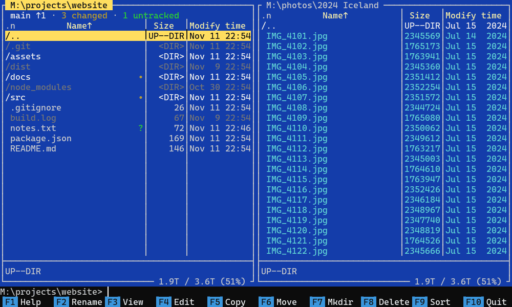
Ins marks files; F5 copies them and F6 moves them, with the speed and the time left. Esc stops a job at once.
foo., nul) all work.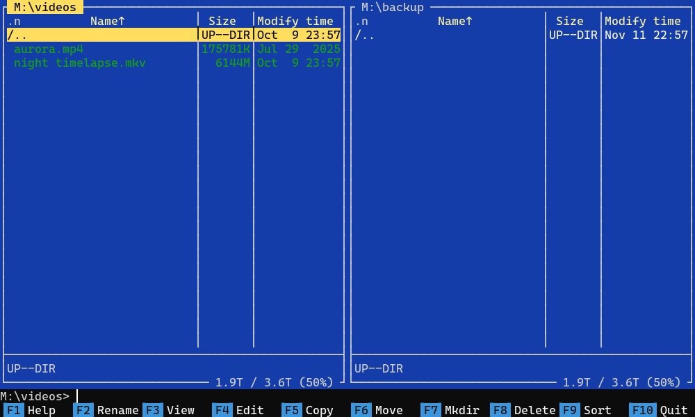
In a repository, the row under the path tells the branch and how the work stands:
main ↑1 · 3 changed · 1 untracked. Beside each file is a mark, as in VS Code:
M changed, A added, ? new, ! in conflict,
and • on a folder with changes inside. What git ignores is dimmed.
main REBASE 2/5.git status runs in the background and never takes git's locks.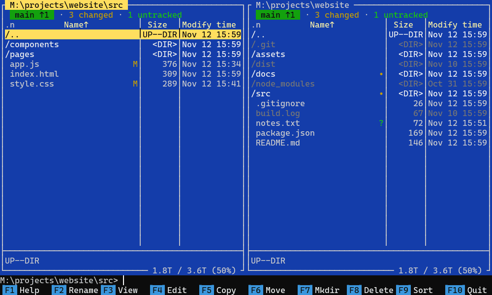
Alt+W lists the repository's worktrees, the most recently used first. Enter goes to
one, into the same subfolder you are in, so src\components in one is
src\components in the other. In a linked worktree the branch shows in cyan. Handy with
tools that work in worktrees of their own, such as coding agents.
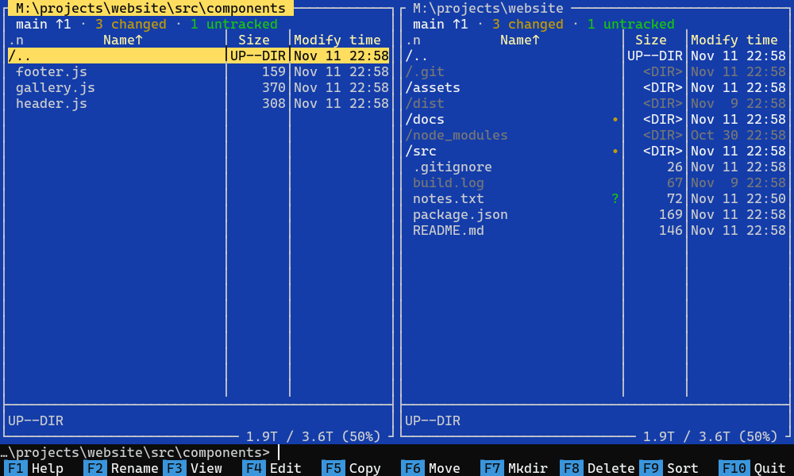
In a repository, Ctrl+E opens the places you keep going back to there: r is the
top, and a key each for the rest. Ins adds where the panel is, a folder or the file under
the cursor. Places are kept per remote, so they are the same in every clone and worktree, and a
* in a path makes a place of every folder that matches.
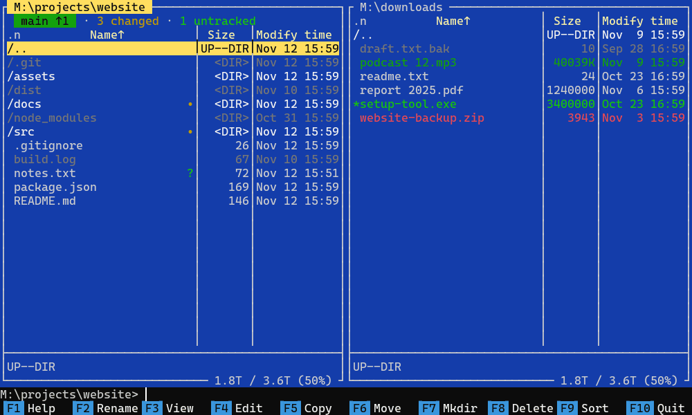
Alt+C shows each scheme on the whole screen as the cursor moves through the list: mc's classic blue and classic-v2 (darker, with a yellow bar), dark, the terminal's own colours, light, Nord, Gruvbox, Dracula, Tokyo Night, Catppuccin, One Dark, Solarized dark and light, and mono. F4 turns one into a file of your own to change. Archives, pictures, media, leftovers and hidden files have colours of their own.
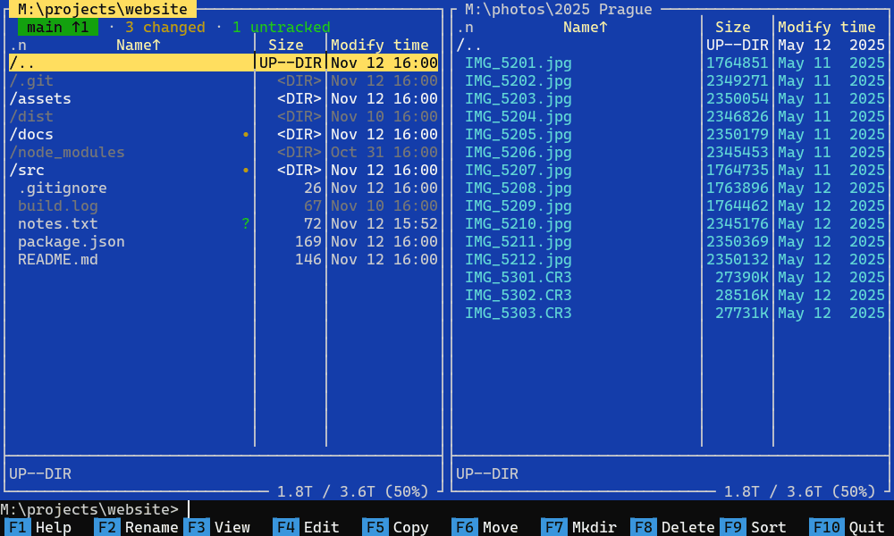
Enter on a zip opens it in the panel; F5 copies out of it, F3 views a file in
it, and quick view reads straight from it. Alt+F5 packs the marked files into a new zip and
Alt+F9 unpacks one, as in Total Commander. Names that would land outside the folder
(../x) are left out.
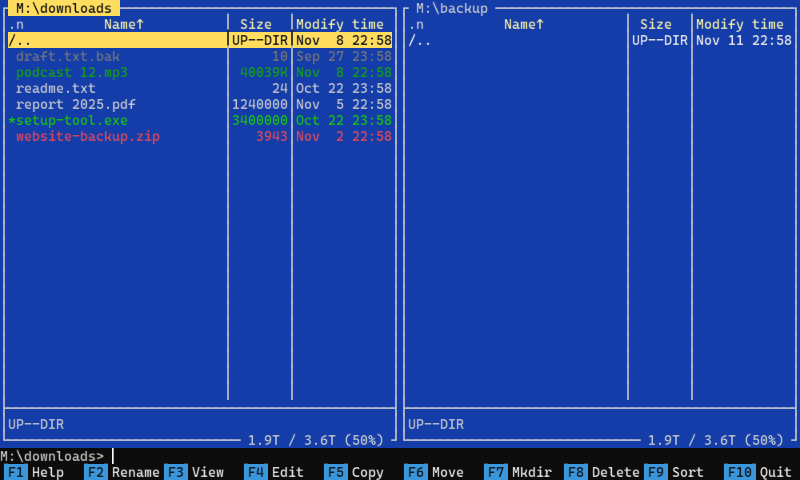
Alt+F7 searches below the panel's folder with ripgrep's own crates: in parallel, skipping what
.gitignore ignores, hidden and binary files. Results come while you type, grouped by
file. Tab narrows by name (*.js, !*test*), Enter takes the panel
there, and F4 opens the file at the matching line.
Ctrl+Q turns the other panel into a view of what is under the cursor: a folder's contents,
the start of a text file, a hex dump of a binary one, a picture's format and size. It is read in
the background, so moving stays quick. Typing cd on the command line moves the panel too.
Shift+F2 marks on each side the files the other side lacks or has an older copy of, so F5 brings the other side up to date.
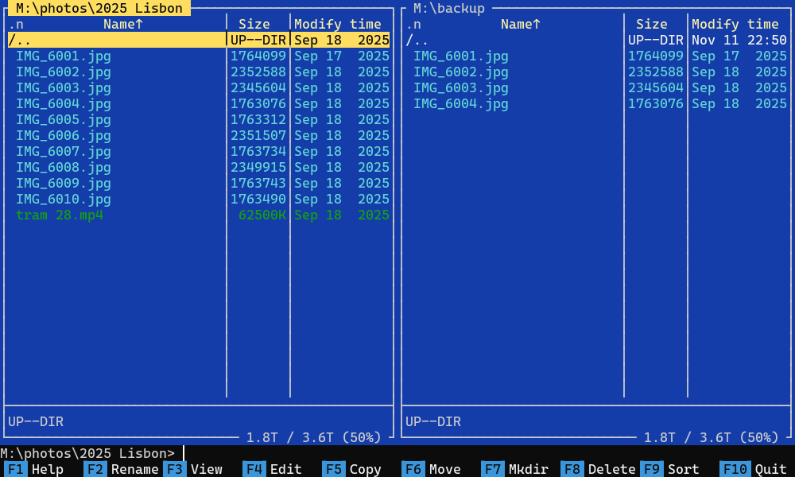
Typing anywhere goes to the command line, and Enter runs it in a shell that lives as long as
cm does: PowerShell on Windows, bash or zsh on Linux. Ctrl+O switches between the panels and
the shell. If you cd there, the panel follows; move the panel, and the shell follows,
quietly. Variables stay, and a long command keeps running while you work in the panels.
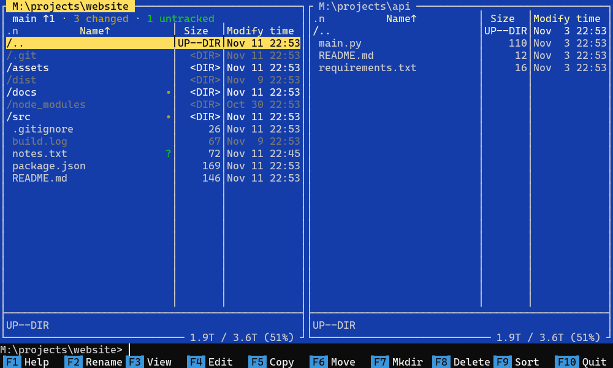
Ctrl+D is the hotlist: a digit jumps. Ctrl+T opens a folder tab, Alt+1…9 goes to one. Alt+Left and Alt+Right go back and forward, and Alt+H lists the folders visited lately, kept between sessions.
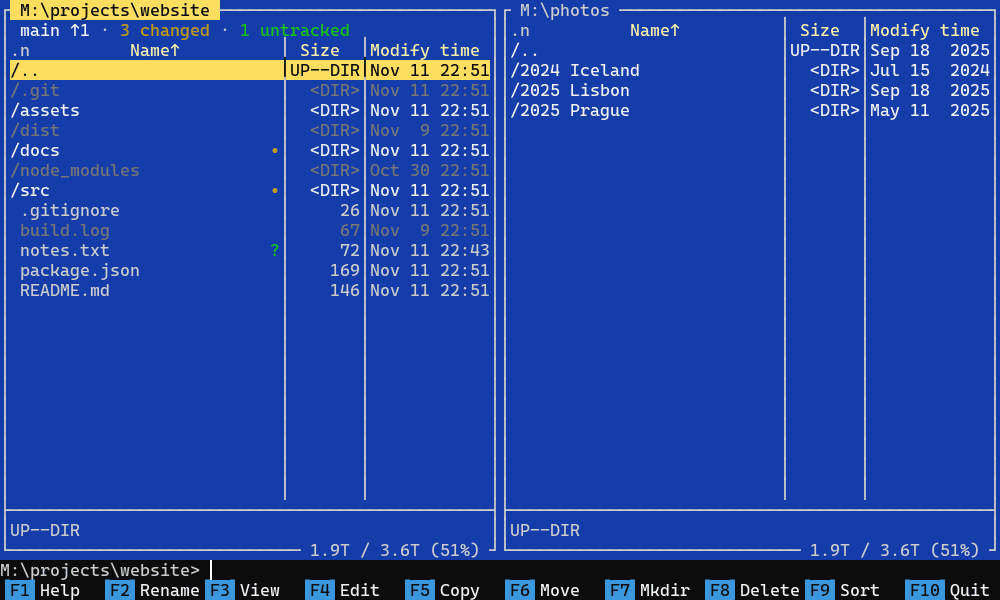
Ctrl+Space measures the folder under the cursor (on .., all of them). Ctrl+F
shows only what matches (*.jpg *.cr3), or not (!*.tmp); folders stay.
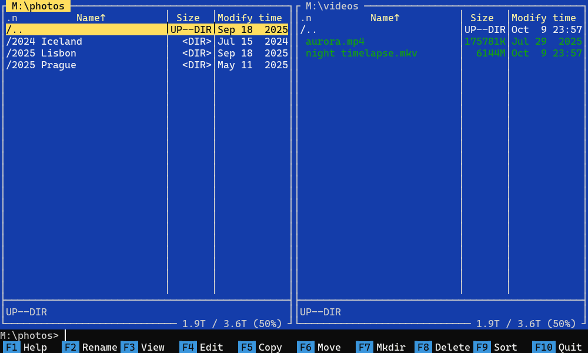
F12 lists every command with its key; type part of a name (zip, branch,
colour) and Enter runs it. F1 has the whole list of keys.
Ctrl+N shows a folder on another computer. F5, F6, F7,
F8, F2, F3 and F4 work there, between computers too. Your own
ssh logs in, with your keys, agent and ~/.ssh/config; cm never sees a password.
Ctrl+C and Ctrl+X put files on the clipboard the way Explorer does, Alt+V pastes what Explorer copied, Shift+Enter asks Windows which app to open a file in, and a shortcut to a folder opens the folder.
On Windows, hold Shift, Ctrl or Alt for a moment and the bottom bar shows what that key does. A click there works as the key does.
F3 and F4 open files in Neovim, or the editor you set; big files go to
less. A file on another computer comes back when you save it.
The question counts what would go while you decide, says which file you may not delete and why, and never reaches through a link or junction, nor on Linux into a mounted disk.
Ctrl+P edits the options; they live in a plain settings.ini. Hidden files,
natural sort ("day 2" before "day 10"), the mouse, the editor and shell: all one row each.